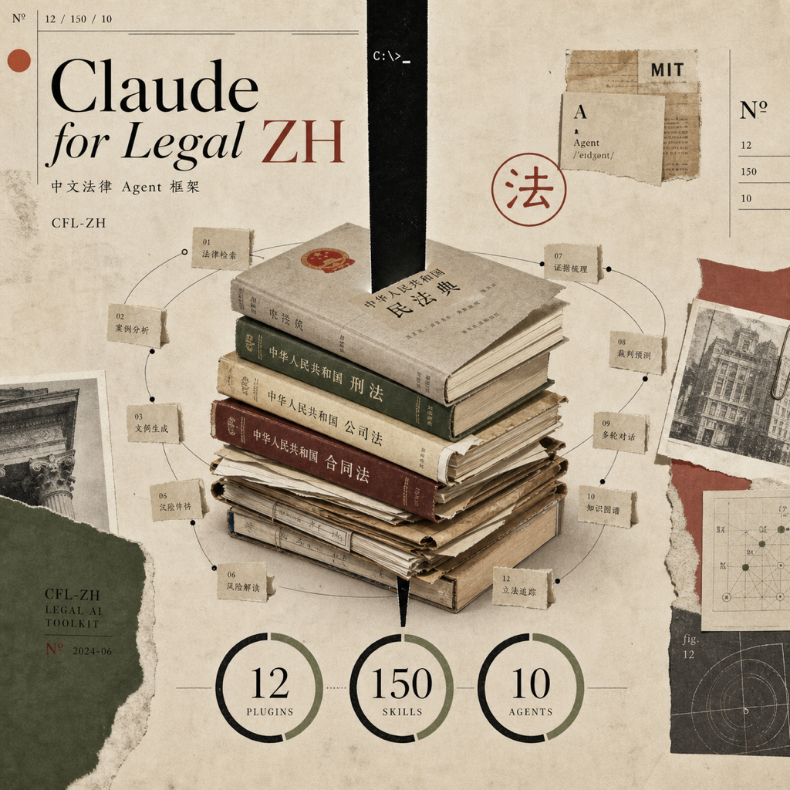
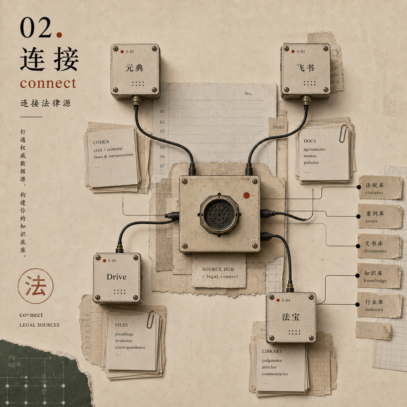
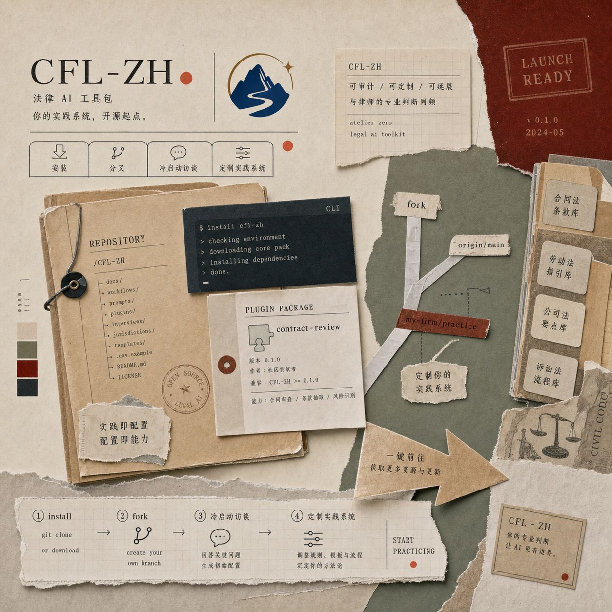

这是 Claude for Legal 的中国法适配版：以业务领域插件、命令式技能、MCP 连接器和托管 Agent 蓝图，覆盖合同、公司、劳动、个保、产品合规、诉讼、监管追踪、AI 治理、知识产权、法律诊所和法学生训练等场景。同一套技能与工作流，可在 Claude Code、DeepSeek Harness（dsh）、Codex 与 WorkBuddy 中运行。

这个仓库用中国法的工作默认值替代美国法预设：民法典合同规则、劳动合同法工作流、民事诉讼与证据规则、个人信息保护 / 数据安全 / 网络安全合规、中国知识产权规则、2024 公司法，以及本地法律检索连接器。
查看本地化说明每个业务领域都是独立插件；每个技能对应一个具体法律工作流；每个连接器把模型连接到法律来源、案件文件、合同系统或团队协作工具。
这个仓库最重要的设计不是提示词，而是程序化工作方式：每个严肃工作流都先学习你的执业姿态，再经过来源、标签、复核关口和可定制文件。
运行 /。插件会把你的审查手册、升级阈值、模板和表达风格写入持久化执业画像。
接入法律与工作系统连接器：元典用于法律法规和案例，飞书或 Drive 用于团队文档，合同系统用于项目记录。

输出带有来源标签，例如法条文本、连接器检索、需要核实的模型知识，或需要律师复核的标记。
Fork Markdown 技能，更新 CLAUDE.md，添加 Agent，并把系统调到你所在团队的真实法律实践。
这个仓库的设计目标就是可 Fork、可检查、可定制。先从最接近你业务的插件开始，在依赖引用前连接法律来源，并把律师复核闭环保留为显性步骤。
